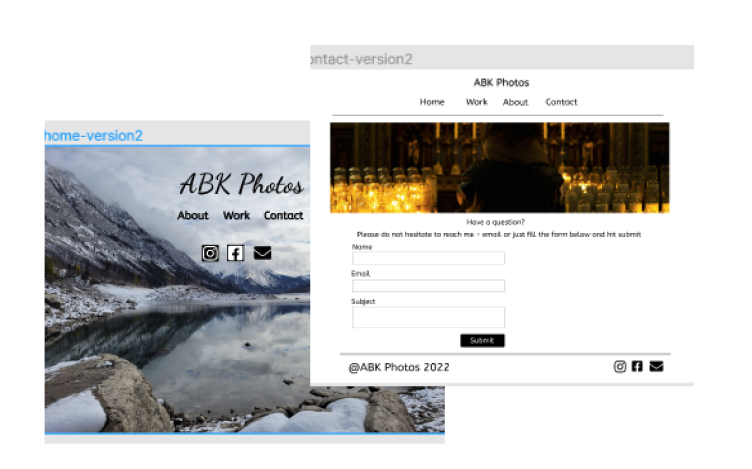
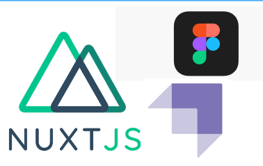
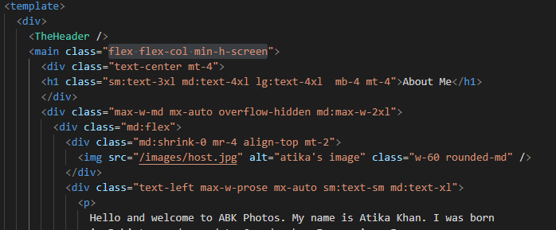

ABK Photos
What is our project about?
- It is photography website.
- It is for real client.
The client wanted a minimalistic website with simple color scheme.
Planning
- Created a kanban for TODO list.
- We created wireframe.
- We designed mockups and design file.
- We created a userstory and taskflow.

Tools we used
- Figma/FigJam
- Kanban Board
- Fonted-framework Nuxt 2
- Tailwindcss
- content Management Strapi

Why we choosed these tools?
- We decide to go with nuxt 2 insted of nuxt 3 because its in Beta phase and we are working on project for actual client.
- And for content management we decided to go with strapi becouse its better for collection/categories type of content.
TailwindCSS
- Choosing to go with both Tailwind and vanila CSS.
- Most of our work was done in tailwindcss.
TailwindCSS provides utility classes to build your own components that are completely responsive.

Strapi
- Strapi is an open-source headless CMS used for building fast and easily manageable APIs written in JavaScript.
- It enables developers to make flexible API structures easily using a beautiful user interface.
Problems Encountered
We were not able to get more then 10 images from strapi
Feature Enhancements
- We are going to add pagination to the gallery.
- We just learnend about Instagram Api so planning to use that in our project.